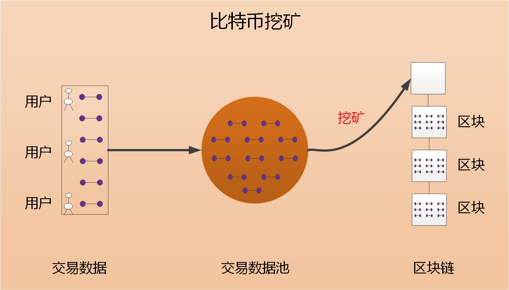

导读
这本书介绍比特币的演化，介绍比特币为什么会越过三个发展阶段，成为真正意义上的数字黄金，以及介绍加密货币所催生出的第三种货币形态，为什么能摧枯拉朽，深刻影响世界经济秩序。
这本书尽力让普通大众能读懂，也能了解到最前沿的进展，并预知接下来的演进。对于专业读者，只需要阅读前言部分与少量章节即可，非专业读者从第一章开始阅读，也能很容易理解。
语言：英文
导读要点前言 I 前言 II 前言 III 第一篇：比特币诞生第一章 问题的由来：中心化的弊端第二章 比特币诞生第一节 比特币诞生第二节 国内的早期参与者第三节 国内的早期参与者II第三章 比特币的主要特点第一节 总量恒定第二节 匿名性第三节 不可篡改第四节 无第三方信任中介第一节 比特币从哪里来第二节 为什么叫挖矿第三节 第一个比特币从哪里来第一节 非法交易第二节 跨境收付款第三节 日常生活中的支付闪电网络崛起第一节 主要创新第二节 闪电网络的其他特点第一节 节点第二节 收款码第三节 托管式闪电网络第一节 可授信闪电网络简介第二节 可授信闪电网络的网络结构第三节 可授信闪电网络的主要特点第四节 可授信闪电网络的进一步演进政府加持第一节 技术上的不确定性第二节 人为治理的必然性第三节 比特币中的人为治理第四节 政府治理的天然优势第一节 系统安全方面的加持第二节 货币性能方面的加持第三节 政府加持的影响第四节 政府加持的收益第一节 逐鹿法则第二节 政府间的博弈第三节 政党间的博弈第四节 大公司参与博弈比特币：新的世界货币第一节 价值的定义第二节 比特币的价值第三节 比特币价值的可持续性第一节 比特币诞生第二节 闪电网络崛起第三节 政府加持第一节 参照物定价法第二节 MV=PT定价法第一节 第一种货币形态：商品货币第二节 第二种货币形态：信用货币第三节 第三种货币形态：储值、支付、记账功能重新组合第一节 价值逻辑第二节 发展建议第三种货币形态第一节 第三种货币形态第二节 第三种货币形态的组成要素第三节 第三种货币形态的主要特征第一节 支付成本的组成第二节 支付成本的优化第三节 支付成本的综合评估第一节 加密货币期货合约第二节 第三种货币形态的体现第三节 第三种货币形态的用户体验第一节 演进速度第二节 匿名货币的穿透力第三节 开放组织的穿透力第一节 绝对价值基准第二节 交易损耗模型第三节 模型补充说明第一节 人们对货币的需求第二节 货币更迭的驱动力第三节 第三种货币形态的必然性第一节 支付货币的网络效应第二节 储值、计价功能的相互影响第一节 第三种货币形态简要分析第二节 影响I：比特币市值超过黄金第三节 影响II：法币只剩少数一些第一节 央行数字货币第二节 第三种货币形态简要分析第三节 货币竞争的新思路第四节 央行数字货币不是第三种货币形态的对手第一节 具体策略第二节 铸币税的理由第三节 铸币税的影响人类信任之锚第一节 哈希值与哈希函数第二节 无罪推定与有罪推定第一节 先验式可信任第二节 后验式可信任第三节 两者在成本、效率上的差异第一节 可信任性是相对的第二节 信任的两种形成机制第三节 人们对信任的需求第一节 双层结构第二节 腾讯记账第三节 新双层结构第一节 整体蓝图第二节 运行机理第三节 新双层结构的主要特征第四节 新双层结构的必然性：需求决定供给机器信任第一节 从同学借钱说起第二节 为什么可以这样？第一节 交易第二节 交易成本第三节 交易过程中的不确定性第一节 人的决策过程第二节 不确定性导致中心化第三节 中心化导致一系列问题第一节 机器信任第二节 深远影响I：货币第三节 深远影响II：支付第四节 深远影响III：未知领域
要点
闪电网络因为通道中需要冻结资金，导致支付成本高、技术进步慢。只需要允许节点之间可以通过授信的方式建立通道，即可解决该问题：冻结的资金大幅降低，支付成本随之大幅降低；没有丢币的担忧，节点能够先用起来再快速迭代，技术演进速度大幅加快。
解决了转账慢且贵的问题，人们立马会转移到怎样处理币值不稳定的问题上。使用比特币与期货合约的组合，能够轻松解决币值稳定的问题，这种组合是有别于商品货币、信用货币的全新的货币存在形式，它将因兼具前两者的优势而所向披靡，深刻影响世界经济秩序，书中将其命名为第三种货币形态。
在解决货币的所有问题之后，人们的注意力会转移到技术上来。比特币是基于一套软件系统而存在，有价值的前提是系统按照其设想长久地运行，但这存在不确定性。
政府加持能够解决这种不确定性，在极端情形下，政府可以通过硬分叉，对比特币做细小的修改以适应刑法的打击，来彻底解决安全问题。但在正常情形下，并不需要硬分叉，政府有太多办法在不对比特币做任何修改的前提下，来大幅提高其安全性。
一些人会担心硬分叉将导致共识度下降，但这并不重要，重要的是第三种货币形态是人们不可或缺的需求，加密货币又是第三种货币形态的必要元素，所以比特币不管有多少瑕疵，只要比其他加密货币更优即可。
这就像一个国家和皇帝，皇子傻一点，并不影响他当皇帝，因为对于广大民众而言，没有皇帝的混乱将更加恐怖，人们依然会从一群傻皇子里面选出一个来继承大统。将比特币比作傻皇子欠妥，但就是这么个道理，许多人担心政府的硬分叉导致共识度下降，或者担心技术上的不确定性，但其实这并不重要。
这条换个角度，把第4条重新表述一遍。加密货币催生出第三种货币形态，而人们对第三种货币形态不可或缺的需求，又会反过来成就加密货币：加密货币是第三种货币形态的必要元素，不管它们多么不完美，市场都会从中选出一个最优的。
这意味着比特币虽然可能有瑕疵，但这并不重要，重要的是人们对第三种货币形态不可或缺的需求，所以即使未来哪天比特币必须要采取硬分叉才能生存下去，这也并不影响什么，并不影响它发展成为数字黄金。
比特币是一种开放式的自组织式的存在，这决定着其演进速度非常快。人们只要买入比特币，就会投入到推动其生态发展的队伍中来，第三种货币形态作为比特币发展的最大突破口，所有力量都将聚焦在它上面。
比特币除了是加密货币，还是一条区块链，可信任性是区块链最大的特征。比特币链能够借助数据指纹为第二层区块链提供可信任性，在这种分层结构中，区块链成为人类社会信任的基石，而比特币将成信任之锚。
前言 I
这本书把比特币的演化分为三个阶段，第一个阶段是比特币诞生，它实现了一种加密货币，第二个阶段是比特币走入人们的日常生活中，第三个阶段是政府加持，政府动用行政力量来支持比特币。
与其他货币一样，比特币的主要价值之一是降低交易成本，支付成本越低，就会被越多的场景使用，价值也随之越高；其次比特币是基于一套软件系统而存在，有价值的前提是系统按照其设想长久的运行，但这存在不确定性——这分别是第二阶段和第三阶段的主要问题。
目前比特币卡在了第二阶段，因为转账慢且贵、币值不稳定而无法进一步普及。只需要将闪电网络稍作改进，变成可授信的闪电网络，即可解决转账慢且贵的问题，并且所催生出的第三种货币形态，又能进一步解决币值稳定的问题，从而促使比特币走入人们的日常生活中。
在第三阶段，政府加持能够彻底解决技术上的不确定性。政府加持的原因有两个，一是随着第三种货币形态的推进，比特币将表现出“利远大于弊”，一是政府之间存在博弈，比特币只需要少数大国支持就能成为数字黄金，而越早支持受益越大。在“利远大于弊”、“越早支持受益越大”的条件下，部分政府的加持将会是定数。
所以只要越过第二阶段，第三阶段就是水到渠成自然而然的事情，而第三种货币形态的出现，将直接促使比特币越过第二发展阶段——比特币将成为真正意义上的数字黄金。
前言 II
加密货币与加密货币期货合约的组合，能够合成一种新的货币，它将被人们广泛使用，并深刻影响世界经济秩序。
具体而言，人们在收到比特币的一瞬间，购买一份比特币空头期货合约，以锁定价值，在支付比特币的一瞬间，将该合约平仓——将比特币与期货合约的组合当成货币来使用。
其实质是将商品货币与信用货币的储值、支付、计价功能打散，再重新组合而成的新的货币，所以它兼具两者的优势，能够同时做到“匿名无国界、币值稳定、实时到账、支付成本为零”：期货合约锁定价值以实现等同于美元的币值稳定，但支付时又保留了加密货币的匿名无国界的特点，以及其基于闪电网络而实现，还能做到实时到账、支付成本为零。
匿名无国界、币值稳定、实时到账容易理解，这里解释下为什么支付成本为零：在实际的场景中，用户不需要自己去交易期货，节点会代为交易，节点帮所有用户交易期货，通过内部对冲的方式，手续费支出能节省95%以上。对于绝大部分用户，留存在支付工具内的资金的利息，足够覆盖这部分费用，即支付成本为零。
如果把信用货币看作是银行创造的，那么第三种货币形态就是节点创造的，区别是前者必须政府的宏观调控，后者则不需要，任何人都可以建立节点，连上全球性的支付网络，为其用户提供服务。
第三种货币形态后台的实现由节点完成，对于用户和商家而言，其完全察觉不到后台所发生的一切，对他们而言，就是在使用一种“无国界的，手续费为零的稳定货币”，并且使用非常便捷。
第三种货币形态由加密货币与期货合约组成，加密货币可以是任意的加密货币，期货合约也可以是任意法币计价的期货合约。
但因为网络效应的存在，虽然的确所有加密货币都可以，但最终只会有一两种被人们广泛使用，比特币毫无疑问就是其中一种，这将直接成就比特币——比特币催生出第三种货币形态，而人们对第三种货币形态不可或缺的需求，又会反过来成就比特币！
也是因为网络效应，虽然所有法币计价的期货合约都可以，但最终只有美元人民币等极少数几种被人们广泛使用，胜出的法币将走进全世界人民的日常生活中——这意味着这一轮货币竞争的重要性不亚于1944布雷顿森林体系的建立，1971信用货币体系的建立。
以前人们认加密货币币值不稳定而影响范围有限，Libra受限于法律而难产，但第三种货币形态的出现，将彻底突破上述限制，影响到每一个角落。
前言 III
前言I介绍了比特币的三个发展阶段，前言II介绍了第三种货币形态，前言III对关键的几个地方作必要的解释和说明。
第一个是可授信的闪电网络，一些人认为可授信不应该或者没必要，这里解释下，虽然改进很小，但差别很大。
两个节点建立通道，交易记录只有他们自己知道，如果他们借助授信来提高结算效率，外界无从知道，也无法阻挡；
闪电网络的作用是促进比特币的流通，对比特币本身没有任何影响，闪电网络无论怎样变，比特币依然是比特币；
在托管模式下，节点是可以将用户的资金冻结在通道中，但这只能解决付款问题，如果要保证良好的收款能力，节点依然需要冻结额外的资金在通道中，尤其是小节点；
对于中小节点而言，所冻结的资金的利息均摊给用户，将导致支付成本高昂，这会促使其放弃开通节点，只有可授信才能将这些数量庞大的中小节点吸纳到闪电网络中来；
注意到货币的双向性，如果只有少数人使用闪电网络，支付时的便捷性就明显不足，只有将这些数量庞大的中小节点（的用户）都聚集进来，优势才能彻底发挥出来；
闪电网络必然导致超级中心，数十个超级中心控制着整个网络，只有可授信才能让网络足够分散、足够扁平化——后者才是不同地区、不同文化、不同种族人民之间共同的诉求；
一项技术只有足够sexy，影响足够大，速度足够快，才能让许许多多原本与比特币无关的人，因为看到它的潜力而买入，而转身过来帮助它发展。
第二个是第三种货币形态，第三种货币形态兼具“匿名无国界、币值稳定、实时到账、支付成本为零”四个特征，这远优于许多国家的法币。
如果把信用货币看作是银行创造的，那么第三种货币形态就是节点创造的，区别是前者必须政府的宏观调控，后者则不需要，任何人都可以建立节点；
第三种货币形态的出现，给互联网平台新的变现方式。对于许多用户量庞大，但始终没法盈利的互联网平台，比特币是一种极佳的变现方式；
如果人们都使用第三种货币形态，则社会很难再逆向发展，回到过去。而在自利行为的驱动下，这些互联网平台将会开通节点，快速结成全球性的支付网络，进入“都使用第三种货币形态”的状态。
第三个是人类信任之锚，可信任性、可编程性是人们的共同需求，但实现方式有两种，一种是先验式可信任，一种是后验式可信任，前者成本过高，后者才是社会的选择，这意味着比特币将成信任之锚。
第一篇：比特币诞生
加密货币历经数十年的发展，最终于2009年随着比特币的诞生，才真正开始爆发出威力，开始改变世界。
第一章 问题的由来：中心化的弊端
中心化的弊端表现在许多领域，这里仅讨论货币与支付领域。政府掌握货币发行权，如果他守信用有能力，就是人民的福祉，但更多是没能力不守信用的，更多是对货币贬值这种隐形的财富掠夺方式乐此不疲的。中国广义货币供应量1990年是1.5万亿，现在是200万亿，货币贬值之剧烈大家都有目共睹，但即使如此已经算很好的了，大部分国家的情况只能用惨不忍睹来形容。
能否设计一种完全依赖密码技术、不受人为操控的数字货币？这是许多密码学家与计算机科学家毕生的追求。
第二章 比特币诞生
加密货币的思想源头可追溯至数十年前，从1982年David Chaum发明的Ecash，到1998年Wei Dai发明的B-money，到2002年Adam Back发明的Hash cash，加密货币历经数十年的发展，汇集众多密码学家与计算机专家的研究成果，最终于2009年随着比特币的诞生，才开始真正爆发出威力，开始改变世界。
第一节 比特币诞生
2008年11月1日，中本聪发布论文《比特币白皮书：一种点对点的电子现金系统》，正式提出比特币的概念，2009年1月3日，第一个版本的比特币客户端上线，标志着比特币正式诞生。
比特币依据特定数学算法产生，并由数学与密码学原理来保证安全，所以也被称为数字货币，或加密货币。
第二节 国内的早期参与者
比特币早期参与者中大部分是美国顶尖的的密码学家、计算机科学家，从2010年开始，国内陆续有人关注起比特币，其中包括：
李林，2013年创立火币网，市值近百亿美元，清华大学毕业；
徐明星，2013年创立OK，市值近百亿美元，中国人民大学毕业；
吴忌寒，2011年翻译比特币白皮书，后来创立比特大陆，成为全世界最大的矿机研发公司，市值近百亿美元，北京大学毕业；
孙宇晨，2017年创立波场，市值一度超过200亿美元，2019年以440万美元拍下巴菲特午餐，北京大学毕业；
李启威，莱特币创始人，莱特币流通市值一度超过200亿美元，至今依然超过40亿美元，麻省理工学院毕业；
李启元，比特币中国创始人，一度是全世界最大的交易所，斯坦福毕业；
烤猫，烤猫矿机创始人，市值一度超过百亿人民币，中国科技大学毕业；
帅初，量子链创始人，市值一度超过百亿人民币，中科院博士；
张嘉楠，开发出世界上第一款ASIC矿机，2019年公司在纳斯达克上市，北航博士肄业；
赵东，原墨迹天气联合创始人，比特币中国社区早期推动者，少数没有发财的早期参与者之一，至今打拼在一线。
除了他们之外，还有许多早期参与者，这些人大都比较低调，大都信奉“我牛逼，我不说，我低调”的人生理念，就不再一一列举。
第三节 国内的早期参与者II
杨林科，比特币中国创始人，比特币中国一度是全世界交易量最大的交易所，没读过大学，进入比特币行业之前经营一家汗蒸店；
郭宏才，业内知名网红，因早期参与比特币社区积累大额财富，学历不高，进入比特币行业以前在山西老家卖牛肉。
与上面名单不同，杨与郭并没有出色的学历背景，但都因为对比特币社区的发展做出贡献而赚到一大笔财富。
第三章 比特币的主要特点
比特币不依靠特定的货币机构发行，它依据特定数学算法，通过大量的计算而产生，并依靠密码学原理来确保安全性。
第一节 总量恒定
比特币系统设定平均每10分钟产出50个比特币，并且每四年减半。即第五年开始，每10分钟产出25个，以此类推。
简单相加即可知道，比特币的总量会越来越接近2102.4万个，但永远不会超过2102.4万个。
第二节 匿名性
比特币账号不需要任何的个人信息，完全由密码（即秘钥）来控制账户。谁控制了密码，对应账号里的比特币就归他所有。如果密码不幸丢失，那么币就相当于没了，没有任何人有能力找回。
第三节 不可篡改
个人对区块链数据的修改范围极为有限，交易数据本身是由密码学规则来保证正确性，无法篡改。唯一能修改的是将交易数据重新打包成新的区块，组成新的区块链，但费用极其昂贵，没人会这么做。
第四节 无第三方信任中介
在比特币系统中，矿工与矿工之间互不相识，矿工与用户之间也互不相识，所以都没有信任可言，但整个系统却以一种安全的方式实现了价值转移。
第四章 比特币从哪里来

所有的比特币最开始系统奖励给矿工的。
第一节 比特币从哪里来
如图所示，用户在使用比特币软件转账时，会提交一笔交易数据到互联网上，所有的交易数据会进入一个池子里——交易数据池。但这个池子里有真数据，也可能有假数据。
挖矿是用计算机程序从池子里提取出真数据，并打包成符合要求的区块。如果某人成功打包出一个区块，就可以得到50个比特币的系统奖励——所有的比特币最开始都是这么来的。
第二节 为什么叫挖矿
当这个人拿到50个比特币之后，他会花出去一部分，于是比特币就开始在世界上流通起来。这与黄金挖矿很像，最开始的黄金都是从土地里挖出来的，有人先挖出了黄金，之后便在全世界流通。
所以打包区块的行为被称为挖矿，打包区块的人被称为矿工。
第三节 第一个比特币从哪里来
有人会问，最开始谁都没有比特币，怎么会有交易数据呢？
因为打包空块也可以获得系统奖励，空块是指没有交易数据（但有其他数据）的区块。第一个比特币就是打包空块而获得的系统奖励。
第五章 比特币的应用场景
第一节 非法交易
比特币由于匿名性，难以追踪的特点，在最开始主要被用于毒品、军火等非法交易。
第二节 跨境收付款
随着比特币流动性的提高，其逐渐被用于跨境收付款，相比于传统跨境支付需要一两个工作日手续费一两百元，用比特币收付款只需要一小时手续费十元左右，并且没有结售汇额度的限制。
第三节 日常生活中的支付
目前使用比特币收付款需要一小时手续费十元左右，远高于人们日常生活中的支付方式。但如果它能做到比日常的支付方式更省钱省时省力，其就能进入人们的日常生活中，被广泛使用。
第二篇：
闪电网络崛起
转账慢且贵，阻碍着比特币进一步普及。
在所有解决方案中，闪电网络最受人期待，该论文被普遍认为是自中本聪发表比特币白皮书以来第二篇具有里程碑意义的论文。
第一章 问题的由来：转账慢且贵
比特币系统设定每10分钟左右处理一批交易，每批2000笔左右。并且每笔交易都需要支付手续费，手续费高的优先处理。这意味着比特币只能支持极少数人使用，只要使用人数稍多，转账就会很慢并且很贵。目前比特币转账需要一小时手续费十元，比日常生活中大部分支付方式都慢和贵。
如何在不对比特币系统做任何修改或只做极少修改的前提下，让比特币转账快起来，是比特币进一步普及的主要障碍。
第二章 闪电网络
为了解决 “在不对比特币系统做任何修改的前提下，让比特币转账快起来”的问题，2015年2月潘志豪与Thaddeus在一篇论文中正式提出闪电网络（Lightning Network，简称LN），该方案在后来的一年时间内被比特币官方代码维护组织接受，并纳入到了比特币的发展规划中。
第一节 主要创新
闪电网络的主要创新是微支付通道（简称通道）：双方在转账之前先建立一个通道，并预先存入一些比特币，以后每次转账时，只需要调整通道中各自的余额即可。
调整通道余额是实时完成，意味着转账实时到账，通道内可以处理海量的交易，意味着手续费趋近于零。
² AB通道只能处理AB之间的转账
AB建立的通道，只能处理A与B之间的转账。
如图所示，如果A与C没有建立通道，那么A给C的转账需要经由B中转：A转给B，B转给C。
² 转账余额不得超过自己的通道余额
假设AB通道中A有1个BTC，B有5个BTC，那么A最多只能向B转1个BTC。
如果A要给C转1个BTC，那么必须要求AB通道中A的余额大于1个BTC，BC通道中B的余额大于1个BTC。
第二节 闪电网络的其他特点
² 与比特币网络风险隔离
闪电网络是第二层网络，独立运行，与比特币网络风险隔离，即使闪电网络崩溃，对比特币网络也没有任何影响。
² 转账记录保存在自己的电脑里
通道内的转账，转账记录只保存在他们自己的电脑里，不需要第三方验证，数学与密码学原理能够保证双方无法作弊。
第三章 托管式闪电网络
了解托管式闪电网络，需要先了解节点与收款码。
第一节 节点
下载安装闪电网络软件，即可成为节点，每个人都能安装一个闪电网络节点。
两个节点发起一笔特殊的交易，即可建立通道，通道建立好后，即可使用闪电网络转账。
第二节 收款码
当两个节点使用闪电网络转账时，由收款的节点出示收款码，付款的节点扫码付款。每个节点可以创建无限多个收款码。
第三节 托管式闪电网络
对于普通用户而言，他们只想转账，并不想创建节点。一些支付工具为了迎合用户的需求，在自己的节点上创建非常多的收款码，将它分配给支。
这样，对于普通用户而言，他们并没有创建节点，而是通过这种共用节点的形式来使用闪电网络，即托管式闪电网络。
目前大部分钱包提供的闪电网络服务，都是托管式闪电网络，包括比特派钱包、虎符钱包、Cobo钱包、币信钱包等。
第四章 闪电网络的困境
要实现任意两人间的支付，闪电网络中需要冻结大量比特币，这会导致支付成本高昂，并且一旦出现技术风险，就可能造成比特币永久丢失，这又进一步阻碍了各大企业对闪电网络的尝试。
虽然业界对闪电网络充满期待，但多数都处于观望状态，都在等待技术的进一步成熟。
第五章 可授信的闪电网络
闪电网络只需要简单的改进，变成可授信的闪电网络，即可解决上述问题。
第一节 可授信闪电网络简介
只要允许通道余额可以透支即可：两个节点建立通道时，可以像原来一样向通道中预先存入比特币，也可以不存入比特币，而是直接给对方一个透支额度。
注：可授信的通道没有用到RSMC和HTLC，但其实现的功能与通道是一样的，为了方便理解，我们依然称其为通道。
第二节 可授信闪电网络的网络结构
两个节点之间的授信分为双向授信、单向授信、不授信三种情况。
² 双向授信
双向授信是指彼此之间都给了对方一个透支额度。一般像火币和OK这一类彼此互信的伙伴，会采用这种双向授信的方式建立通道。
双向授信的通道用红色线表示，如图所示。
² 单向授信
单向授信是指A节点允许B节点透支，但B不允许A透支，所以建立通道时，A需要预先存入比特币，但B不需要。这种情况常见于大公司的节点与不知名的小节点之间建立的通道。
单向授信通道用蓝色箭头表示，箭头指向的一方为被允许透支的一方，如图所示。
² 不授信
不授信是指两个节点互不信任，还是按照原来的方法建立通道，双方都预先存入比特币。这种情况常见于两个不同的国家的节点之间，由于互不信任，就会采用这种方式建立通道。
不授信通道用黑线表示，如图所示。
² 整个网络的结构
整个闪电网络的网络结构，如图所示。
第三节 可授信闪电网络的主要特点
² 大幅降低支付成本
通道冻结资金大幅减少，用户承担的支付成本随之大幅降低。
² 大幅提高演进速度
因为没有丢币风险，可以先用起来，再不断迭代，而不是都在等技术成熟之后才敢用。
² 足够分散、扁平化
少数几个节点瘫痪，对整个网络的影响非常小。
² 全世界开放接入
任何人都可以建立节点，连上全球性的支付网络，为当地居民提供服务。
第四节 可授信闪电网络的进一步演进
解决转账慢与贵的问题之后，人们的注意力会转移到币值稳定的问题上。基于可授信的闪电网络，使用期货合约能够很好的解决币值稳定问题，但为了读者流畅的阅读，关于它的介绍放在了附加篇一中。
第三篇：
政府加持
在解决完货币的所有问题之后，人们的注意力会转移到技术上。
比特币是基于一套软件系统而存在，其能否按照设想长久的运行，是存在不确定性的。
第一章 问题的由来：技术上的不确定性
比特币是基于一套软件系统而存在，这套系统能否按照其设想长久的运行，是存在一定的不确定性的。技术漏洞、激励机制失效、加密算法被数学家破解等等都会导致系统崩溃，这些不确定性主要来自技术层面上，这里把他们统一归为技术上的不确定性，它是比特币最后一个问题。
比如，2010年链上出现过一笔金额为180亿个BTC的转账，显然是系统有漏洞导致，2018年也出现过拒绝服务漏洞、通胀漏洞等。再比如，矿工竞争性记账是比特币最重要的环节之一，但矿工的奖励每四年减半，这会让系统越来越不平衡，51%攻击的风险越来越高。
第二章 不确定性与人为治理
不确定性需要人为治理来应对，而政府治理有时是人为治理的最优选项。
第一节 技术上的不确定性
不确定性一般指事物运行的结果存在很多种可能性，其中包括能够在事前预知的，也包括事前无法预知的。在经济学中，不确定性可以理解为风险。
在这里，技术上的不确定性是指比特币系统能否按照其设想长久的运行下去的不确定性。
第二节 人为治理的必然性
每当系统（不管是软件系统，还是社会制度体系）无法按照既定规则运行时，就需要人为调节来加以修复，我们把这个过程理解为人为治理。
不确定性必然存在，人为治理必然需要。
第三节 比特币中的人为治理
Core是比特币官方代码维护组织，他们不定期升级比特币系统，该组织由顶尖的一批计算机科学家组成。
比特币社区是一种开放的存在，社区中汇集了大量密码学家、计算机科学家以及各类机构。比特币社区一方面提供各种技术发展路线的建议，另一方面对Core新提交的代码进行测试。
每次Core发布新版本的代码之前，都会先提交到比特币社区，进行漫长的开放测试，接受众多顶尖人士的测评，在确保没有问题之后才会正式上线。
可以相信，绝大部分的技术问题都可以以这种方式解决，同时也需认识到，这种方式能解决绝大部分问题，但不能解决所有问题。
第四节 政府治理的天然优势
政府因为能够动用行政的力量，在治理时表现出天然的优势。
比如在自然状态下，好人坏人各有50%，但在刑法威慑下，99%都会变成好人；再比如，在自然状态下，一些有利于集体但不利于自己的事没人干，但在法律的迫使下，他不得不干。
第三章 政府加持的手段、影响与收益
加持，即保护、扶持。政府加持，指政府动用行政的力量来扶持比特币。
第一节 系统安全方面的加持
政府加持分两种，在极端情形下可以通过硬分叉，来彻底解决安全问题，但在正常情形下，并不需要硬分叉，政府有太多办法在不对比特币做任何修改的前提下，大幅提高比特币系统的安全性。
² 不修改比特币：政府记账
政府可以购买算力成为记账节点，或者通过经营矿池参与记账，或者通过行政手段要求大公司参与记账，政府记账的好处是在出现分叉时，能够快速的重新凝聚共识。
这种方式在比特币系统之外施行，不对比特币做任何改变。
² 修改比特币：硬分叉
在极端情形下，政府可采取硬分叉，对比特币做细微的修改，再用刑法打击坏人，即可彻底解决安全问题。
这种方式需要对比特币做细微的修改，以适应刑法的有效打击，所以会导致硬分叉，好处是能彻底解决安全问题。
² 硬分叉的补充说明
每个政府都可以分叉一个，市场竞争会留下最优秀的几个。硬分叉可能会导致共识度下降，但这并不重要，并不影响比特币发展成为数字黄金，这在附加篇一第八章第二节做出了解释。
第二节 货币性能方面的加持
政府加持也能提升比特币的货币性能，所以也顺便介绍一下。货币性能指货币属性，指人们使用比特币时的便捷度、综合成本等。
² 列为外汇储备
政府可以将比特币列为外汇储备，设定每个月1—10亿美元的购买计划。
² 列为一般性支付手段
也可以将比特币列为本国的一般性支付手段，任何人不得拒收，民众亦可以用其支付政府税收。
² 建设基础设施
政府也可以建设各类基础设施，或者给相应企业发放牌照，比如数字货币交易所、托管机构等。
第三节 政府加持的影响
政府加持能够彻底解决技术上的不确定性，并且极大的强化比特币的货币性能，只要少数几个大国加持，就能成就比特币。
第四节 政府加持的收益
政府加持的收益，是指政府在事前买入比特币，事后因为币价上涨的获利。
按照买入105万个计算（总量的5%），买入价不超过4万美元，卖出价30万美元，盈利近3000亿美元。地球上90%的国家一年的财政收入不到3000亿美元，包括俄罗斯、土耳其、瑞士、瑞典、芬兰、沙特、印尼、南非、阿根廷；60%国家五年的财政收入都不到3000亿美元，包括巴基斯坦、新加坡、马来西亚、伊朗、伊拉克。
第四章 政府加持的原因一：利远大于弊
科学技术是一把双刃剑，许多新技术都同时带来利和弊，如果利远大于弊，多数政府一般会选择加持而不是扼杀。
比特币的弊主要是助长非法交易，已经完全体现，但利却会随着第三种货币形态的推进而快速放大。在越过第二个发展阶段之后，比特币将表现出利远大于弊。
第五章 政府加持的原因二：逐鹿法则
第一节 逐鹿法则
为了更准确地描述政府间的博弈，这里新定义一个逐鹿法则。
逐鹿法则：森林里有一只鹿，28个猎人每人拿一把枪，只要有7个人开枪这头鹿就会死，第一个开枪的人拿一半，第二个开枪的人拿剩下一半的一半，依此类推。但如果开枪的人小于7，鹿就不会死，开枪的人会损失一颗子弹。
显然在逐鹿法则下，大家会开枪，鹿会死。
第二节 政府间的博弈
第三章已介绍，只需要少数大国加持，比特币就能成为数字黄金。这些政府会因提前买入比特币而受益，越早买入受益越大。
映射到逐鹿法则中，28个猎人即是28个国家（最富裕或者人口最多），鹿是比特币，开枪是加持比特币，越早开枪代表越早加持。
第三节 政党间的博弈
政府内部分许多政党，不同政党有不同的执政理念和政治利益，其对比特币的态度也不尽相同。
政策带来的影响往往有不可逆转性，比如民主党上台宣布将比特币列为外汇储备和一般性支付手段，毫无疑问比特币的各种基础设施会飞速发展，民众也越来越多的使用比特币。而一旦这些形成，几乎不可能通过取消政策恢复到原来的水平。
即，一个政府内部，只要有一个政党支持，该政府最终就会支持——假设多党轮流执政。
那么，会有政党寻思着先买入比特币，待上台之后推动政府加持，再从币价上涨中牟利吗？显然，他们和他们背后的财团有天然的动力去这么做。
第四节 大公司参与博弈
大公司一面面向大众，为海量用户提供服务，其背后的股东又往往是各大财团、政府基金。大企业是一道桥梁，他的加持，能为比特币注入海量用户，建设各种基础设施，也能影响政府决策。
大企业的抉择将显著影响到博弈的局面，而其行为往往具有自发性、逐利性。
会有大公司寻思着先买入比特币，再为用户提供加密货币服务，或者游说政府加持，以从币价上涨中牟利吗？显然，他们和他们背后的财团有天然的动力去这么做。
第四篇：
比特币：新的世界货币
人类发展至今，货币可以归为两类：商品货币和信用货币。
比特币的出现，会催生出第三类货币，第三类货币又会反过来成就比特币。
第一章 比特币的价值
我们要远离比特币，它就是海市蜃楼，说比特币有巨大价值的观点，其实就是一个笑话——巴菲特2014年；
比特币的毒性比毒药更大——巴菲特2016年；
比特币是一种欺诈行为,泡沫将破裂······这比郁金香球茎还糟糕。它不会结束，有人会被害死的，这一货币没有法律支持，最后它会崩盘的——吉米·戴蒙（摩根大通CEO）2017/09/14；
比特币就是一种全无意义的存在······目前价格高涨的比特币，就像是美国独立战争时期的大陆币，没有金银等作为支撑，虽然能购买到产品和服务，但最终一文不值······明知道东西不值钱，人们还是会买，就算赌输的几率很大，你也拦不住人们去赌——格林斯潘2017/12/7；
加密数字货币这个词本身就有些不恰当，它是一个典型的泡沫，它总是基于某些误解——索罗斯2018/01/26；
比特币是一种愚蠢的投资类型，原因很简单，因为它不能创造任何价值——比尔盖茨2018/5/26；
比特币没有任何独特的价值，它基本上就是一种幻想。比特币吸引了一堆骗子，如果你去街上叫卖某种东西行骗，一般是没人会买的，但你要是进了华尔街，就会有大笔钱砸进来——巴菲特2019/02/28。
除了他们，还有一众诺贝尔经济奖得主也都普遍持负面态度。目前真正对比特币抱有幻想的，对比特币的未来抱有期待的，只有一小撮人，很小的一撮人。原本倒是有一大撮的，无奈被割了一茬又一茬，倒下了一批又一批，只剩这么一小撮了。这一小撮人中，有的是一直没学会怎么买币而幸存下来的，有的是刚学会买币但买了USDT而幸存下来的，还有的是开仓时手抖不小心开反了方向而幸存下来的，还有更多的是房产证没下来贷不了款而幸存下来的，反正能幸存下来的，都各有各的幸运。
回到正题，比特币到底有价值吗？它的价值在哪里？在这种舆论背景下，有人被问到这些问题，由于没有给出准确的解释，让听者很鄙视。这一章专门介绍比特币的价值在哪里，每一位持币者都应该是训练有素的，组织才有力量。
第一节 价值的定义
锄头有价值吗？多数人会说有，如果没有锄头，农民种玉米只能用手刨坑，那多费力，有了锄头，刨坑明显会快很多，省时省力。
这里可以给价值一个狭义的定义：如果一种东西的存在，能够为当事人节省成本，我们就说这种东西有价值。
第二节 比特币的价值
按照这种定义，比特币就有价值，因为比特币的存在，能够为无数外贸企业在跨境收付款时省时省钱省力：使用美元汇款时，算上结售汇额度用完和非工作日等情况，一个完整的付款过程通常需要1-4天，费用也超过200元，而比特币只需要一个小时手续费不到10元。
第三节 比特币价值的可持续性
从目前看，只要使用比特币收付款比传统的跨境支付更优，其跨境支付的价值就会持续下去。
在短期内，如果闪电网络实现，将收付款的时间和费用都降到极低，那么它的价值不仅能持续，还能进一步放大。
时间再久一些，一旦政府开始动用行政力量来支持比特币，那么不仅货币性能会进一步增强，其在技术上的不确定性也将被解决，而成为真正意义上的数字黄金。
第二章 比特币的三个发展阶段
第一节 比特币诞生
2009年1月3日第一版比特币客户端发布一般被视为比特币诞生的起点。比特币是人类历史上第一个“没有以第三方信任机构为基础”的加密货币，它的特征主要有：总量恒定、不可篡改、不需要第三方信任机构等。
第二节 闪电网络崛起
这里把闪电网络视为比特币的第二个发展阶段，并把2017年9月第一版闪电网络客户端发布视为第二个阶段的起点。闪电网络将使比特币支付的时间和成本都降至极低，促使其走进日常生活中。
第三节 政府加持
把政府动用行政力量来支持比特币视为比特币发展的第三个阶段，并把出现第一个这么做的政府的时间点视为第三个阶段的起点，虽然还没有政府这么做。在第三个阶段，技术上的不确定性得到解决，货币性能大幅增强，比特币成为真正意义上的数字黄金。
第三章 比特币的定价
这里讨论比特币在第三阶段后的理论定价。
第一节 参照物定价法
参照物定价法是指参考市场中功能类似的商品来定价，与比特币最接近的是黄金。
目前全世界黄金的总量大约20万吨，2019年黄金的平均价格每吨5000万美元，黄金市值超过10万亿美元。按照市值10万亿美元，总量2100万个计算，比特币的理论价格约为50万美元。
考虑到货币性能远优于黄金，比特币的市值将会远远超过黄金，但作为奢侈品的价值远不如黄金，又应该打个折扣。综合来看，数十万美元是比较合理的价格区间。
第二节 MV=PT定价法
假设物价指数为P，那么计价货币的币值C=1/P .
MV=PT是经济学经典的公式之一，它表示价格水平、货币供应量之间的关系。
根据C=1/P和MV=PT，则有比特币的币值C=T/MV .
假设全世界每年20万亿美元的跨境贸易均使用比特币支付，那么T为20万亿美元，M为2100万个，V为货币流通速度，在这里取3。则可以得到比特币的理论价格约为31万美元。
考虑到币价不稳定，货币流通速度V会大于3，币价将会小于理论值；但随着闪电网络与第三种货币形态的推进，全社会使用比特币支付的商品交易量T将大于20万亿，币价又会数倍于理论值。总的来说，数十万美元是比较合理的价格区间。
注：为方便理解，所有公式均没有考虑量纲。
第四章 货币的存在形式
人类发展至今，货币可以归为两类：商品货币和信用货币。
加密货币的出现，会催生出第三类货币——储值、支付、记账功能重新组合而成的新的货币，为了方便传播，书中将它命名为第三种货币形态，而不叫第三类货币，或者第三类货币形态。
第一节 第一种货币形态：商品货币
商品货币是指使用商品本身作为货币的货币，或者以实物商品为支撑的货币，黄金，白银，比特币都属于商品货币。
商品货币特点是对所有人都相对公平，缺点是币值不稳定。因为公平，所以容易在全世界流通。另一个特点是匿名性，谁拿到就归谁，人们无从知晓上一任主人是谁，匿名性在比特币身上表现尤为突出。
第二节 第二种货币形态：信用货币
信用货币的实质是债权，最大特点是币值稳定，被广泛用于支付和计价，缺点是频频发生的恶性通胀导致不公平。因为不公平，每个国家都会自己发行货币，而尽量不使用他国货币。
第三节 第三种货币形态：储值、支付、记账功能重新组合
第三种货币形态实质是将商品货币与信用货币的储值、支付、记账功能打散，再重新组合而成的新的货币。它兼具商品货币与信用货币的优势。
第五章 比特币的价值逻辑与发展建议
第一节 价值逻辑
² 用户的行为逻辑
绝大部分用户并不关心比特币是什么，长什么样子，他们只关心用它收付款时，是不是更省钱省时省力，如果是就会用。
² 投资人的行为逻辑
所有的投资人与投资机构的行为都一样：先研究是否值得投资，一旦买入，便会调动所有资源帮助公司发展壮大，以推高股价（币价）。
² 政府的行为逻辑
在逐鹿法则下，在利远大于弊的背景下，部分政府的加持是定数。
² 比特币的价值逻辑
与其它货币一样，比特币的主要价值之一是降低交易成本，支付成本越低，就会被越多的场景使用，价值也随之越高。此外，比特币是基于一套软件系统而存在，有价值的前提是系统按照其设想长久的运行，这存在不确定性，政府加持能够极好的解决这种不确定性。
第二节 发展建议
所以问题的关键在于怎样让“利远大于弊”，这也是第二个发展阶段的主旨，而只要越过第二阶段，第三阶段就是水到渠成自然而然。
第三种货币形态的普及，能做到让比特币“利远大于弊”。
附加篇一：
第三种货币形态
当转账慢与贵的问题解决后，人们的目光会转移至币值稳定的问题上。
比特币与期货合约的组合能很好的处理币值稳定问题，这种组合将被广泛使用，并深刻影响世界经济秩序。
第一章 第三种货币形态
第三种货币形态的做法也非常简单，但同样能发挥很大威力。
第一节 第三种货币形态
人们在收到比特币的一瞬间，购买一份比特币空头期货合约，以锁定价值；在支付比特币的一瞬间，将该合约平仓。
即把比特币与期货合约的组合当成货币来使用，这种做法下，用户等于在持有币值稳定的法币，但支付时又能做到匿名无国界。
解释一下为什么它能叫货币。一个农民收获一亩土豆，但一时吃不完，就需要把一部分存起来以后再吃。但土豆容易坏，所以农民必须把它换成某个东西储存起来，以后要吃时，再拿这个东西去换。所有人都有类似的需求，都需要“这个东西”，充当“这个东西”的东西就被大家叫做货币，它以前是贝壳、铜板、黄金，现在是纸币。由于加密货币与期货合约的组合也能充当“这个东西”，并且将被人们大量使用，所以这种组合也能算货币。
第二节 第三种货币形态的组成要素
它由加密货币与期货合约组合而成。
加密货币用来支付，它可以是比特币，也可以是其他的加密货币；期货合约用来锁定价值，它可以是任意法币计价的期货合约。
第三节 第三种货币形态的主要特征
² 匿名无国界
借助加密货币而实现。
² 币值稳定
同时持有加密货币和期货合约空头，相当于持有法币。
² 实时到账
借助可授信闪电网络而实现。
² 支付成本为零
支付宝说的免费，实际是在一定额度内转账免费，超出额度后依然会收取微小的费用。但99.9%的用户都不会超过这个额度，所以支付宝说零手续费大家都没意见。这里说的支付成本为零也是这个含义。
第二章 第三种货币形态的支付成本
支付成本主要是期货交易手续费，在真实的场景中，并不需要用户自己去交易期货，而是由节点代为交易。这一章介绍为什么支付成本为零。
第一节 支付成本的组成
支付成本包括：闪电网络节点运营维护的成本，闪电网络中冻结资金的利息，买卖期货合约时的手续费。
其中买卖期货合约时的手续费是主要成本。
² 节点运营维护的成本
由节点自己承担，大家从来没听过支付宝叫大家把服务器的成本摊一下吧，所有互联网公司都不会这样。
² 冻结资金的利息成本
在可授信闪电网络下，通道中冻结的资金会非常少，相信多数读者能直接感觉到，这部分成本也忽略不计。
² 期货交易手续费
在用户每次收付款时都会发生一次，它是主要成本。
第二节 支付成本的优化
支付成本主要是期货交易手续费，在真实的场景中，并不需要用户自己去交易期货，而是由节点代为交易。节点帮助所有用户交易期货，通过内部对冲的方式，节点能将手续费支出降低95%以上。
假设火币网节点上有100万个用户，经常发生的情况是A1用户收到1 BTC的一瞬间，A2对外支付了1 BTC，在这种情况下，节点就不需要去买卖期货合约了——节省了期货交易手续费。
其次，如下图所示，所有商品期货的价格的短期波动幅度都高度服从正态分布，比特币亦服从该规律。
基于以上两点，可以做内部对冲：计算所有用户的净值之和，每变动100个BTC，就进行一次期货交易（而不是每有用户收付款都去进行一次期货交易），对冲掉风险敞口。
在两次期货交易的期间内，节点的净持仓是[-100,+100]区间内的随机数，而币价的短期波动幅度高度服从正态分布，所以多个回合下来，敞口部分的盈亏会趋近于零，节点支出的手续费能降低95%。
² 用户数没有100万怎么办？
会出现第三方公司，专门提供对冲风险敞口的服务，节点只需要将用户的收付款数据提交给其即可。
第三节 支付成本的综合评估
用户使用支付工具时，常常会有资金留存在支付工具内，其利息足够抵扣支付手续费。
² 期货手续费的评估
目前大部分交易所的期货交易手续费都低于0.03%，随着流动性提升，交易手续费会自然下降，目前黄金外汇的期货手续费均以已低至0.003%。
通过轧差法，节点能将手续费支出降低95%以上。保守估计，要用户承担的手续费将低于0.001% .
² 资金利息的评估
用户留存在支付工具内的资金，按照年息1%计算，用户收到款后9小时，即可累积0.001%的利息。
而各国的货币流通速度普遍在2-6之间，即货币平均2到6个月才会完成一次完整的周转。
² 综合成本
对绝大多数用户而言，其留存资金的利息足以抵扣支付手续费，节点只需要设计简单的费率策略，即可让用户享受到零成本的支付。
第三章 第三种货币形态的现实案例
这种前所未有的货币形式，真的会被人们大量使用吗？本章介绍一种在现实生活中已经存在的案例，来给予说明。
第一节 加密货币期货合约
国内绝大部分交易所的比特币期货合约，都是采用美元计价，但用户在交易时，并没有用到美元，而是使用比特币结算——用户以比特币作为保证金，亏了会扣比特币，赚了也是赚比特币，整个过程没有用到美元。
第二节 第三种货币形态的体现
把期货合约看成一种商品，该商品用美元计价。用户买入商品时，支付的是比特币，卖出商品时，收回的也是比特币。
在这个过程中，商品用美元计价，但用比特币支付。这虽然不是严格意义上的第三种货币形态，但它已经实现了一半：以美元计价，却用比特币支付——支付、计价功能分离。
第三节 第三种货币形态的用户体验
国内期货交易了这么久，交易的人也这么多，但从来没有谁提出过意见，可以说明，大家并没觉得有什么不妥。
对于第三种货币形态，用户会觉得自己就是在是使用匿名无国界的美元，用起来很方便，其察觉不到也并不关心后台所发生的一切。
第四章 第三种货币形态的演进速度与穿透力
人们一旦买入比特币，便会成为推动其发展的新力量，比特币开放式的自组织式的特征，决定着它能接受所有的这些推动力。
第一节 演进速度
原本互联网的速度就已经很快了。从2007年第一代iphone推出，只10年人类就全面进入智能手机时代；微信支付2013年成立为标志，也只6年即让几千万老太太爱不释手。
需要注意到差别，这些互联网产品主要是让用户受益。而在比特币生态中，除了用户受益之外，持币者受益更大，同时持币者广泛分布，不受地理条件制约。这种开放式自组织式协作的特征，决定了第三种货币形态的演进速度更快。
第二节 匿名货币的穿透力
穿透力表现在两个方面，一是匿名货币表现出来的穿透力，它能轻松击穿货币壁垒，另一个是开放组织表现出来的穿透力，这让它更能深入民众。
击穿货币壁垒容易理解，我们把重点放在后一项。
第三节 开放组织的穿透力
一国政府很容易通过行政命令，来禁止支付宝、facebook进入本国市场。但闪电网络是一种开放式的自组织式的存在，本国之内所有人都可以开设节点，连上全球的支付网络，来为当地居民提供服务。
多数政府都能轻易封杀前者，但只有少数政府有能力封杀后者。
第五章 货币降低交易成本的原理
接下来的内容偏理论，这一章先建立一套分析框架。对于大部分只是为了买币的读者，只需要阅读前四章，了解到第三种货币形态确实更优即可，没有必要继续阅读，可以直接跳转至附加篇二。
第一节 绝对价值基准
假设把地球上每种商品都取N分之一，组成一个商品篮子，并把这个商品篮子的价值计为δ，将它视为绝对的价值基准。
第二节 交易损耗模型
将A商品换成B商品，在使用货币与不使用货币两种情况下，所需要付出的成本如下图。横坐标是时间，纵坐标是以δ计算的价值单位数。
第三节 模型补充说明
假设A商品是土豆，他随时间而腐烂，价值随时间衰减，所以上图中商品的价值曲线向下倾斜。许多商品的价值并不随时间衰减，他们的曲线可能是波动的，甚至向上倾斜的，但这都不影响分析结论。
第六章 货币更迭的驱动力
人们对货币的需求，决定着货币更迭的方向。
第一节 人们对货币的需求
人们使用货币，最终关心的是H2，人们对货币最根本的需求，就是更低的H2，注意H2是以绝对价值基准来度量的。
第二节 货币更迭的驱动力
在自然状态下，或者人们能够自由选择的前提下，每一次货币更迭，不管其存在形式怎么变化，H2总体上在下降。可以说货币更迭最根本的驱动力，就是更低的H2。
这里只讨论人们能够自由选择的情况，不讨论存在货币壁垒时的情况，加密货币已经让货币壁垒成为过去，再讨论没有太大意义。
第三节 第三种货币形态的必然性
² 商品货币的必然性
在最开始，要完成任意商品A与B之间的交换，交易成本过高，于是某些商品成为了交换中介。
² 信用货币的必然性
随着社会的发展，信用交易大量出现，人们发现将债权作为货币，只要调节好便能使H2大幅下降，于是债权成为货币。
² 第三种货币形态的必然性
但也有很多国家调节不好的，导致货币大幅贬值，在法律的约束下，其居民又无法自由选择，于是第三种货币形态出现。只要货币壁垒存在，加密货币就会存在，第三种货币形态也就存在。
第七章 第三种货币形态简要分析
在以前，货币的储值、支付、计价功能是一个整体，第三种货币形态是将这三种功能打散，重新组合而成的新货币，发生改变之后，三种功能之间的相互影响变得非常重要。但为了精简篇幅，这里只分析两点。
第一节 支付货币的网络效应
每个人都会使用接受人群最多的货币支付，这会促使其接受人群进一步增多，即支付货币有显著的网络效应。
第二节 储值、计价功能的相互影响
大众使用什么货币储值，商家就会用什么货币给商品计价，而商家用什么货币给商品计价，就会要求用什么货币支付，也会促使人们使用什么货币储值。
而大众的行为（储值货币）比较难改变，商家的行为（计价货币）很容易改变，所以虽然这两个过程都有发生，但前者是主流：大众用什么货币储值，商品就会以什么货币计价（储值货币决定计价货币）。
这里隐含了一个假设：支付成本为零，所以支付功能不影响上述过程。为了精简篇幅，这里只讨论支付成本为零的情况。
第八章 第三种货币形态的影响
第三种货币形态将促使比特币发展成为数字黄金，并导致法币最终只剩少数几个。
第一节 第三种货币形态简要分析
第三种货币形态由加密货币与期货合约组成，加密货币用于支付，期货合约的计价货币（法定货币）用于储值与计价。
加密货币可以是比特币，也可以是其他任意的加密货币，法定货币可以是美元，也可以是其他任意的法定货币。
第二节 影响I：比特币市值超过黄金
支付货币有显著的网络效应，虽然所有加密货币都可以作为支付货币，但最终只有BTC等极少数全世界都接受的才能成为第三种货币形态中的支付货币。
虽然比特币可能存在瑕疵，但这并不重要，第三种货币形态是所有人的共同需求，加密货币又是第三种货币形态的必要元素，所以比特币有点瑕疵也不影响，只要比其他加密货币更好即可。
在第三篇第四章第一节中提到，极端情形下，比特币需要政府分叉来彻底解决技术上的不确定性，分叉可能导致共识度下降，但这并不影响什么，并不影响比特币发展成为数字黄金，上一段已作出解释。
第三节 影响II：法币只剩少数一些
储值与计价货币之间也有显著的网络效应，虽然所有法币都可以用作计价、储值，但最终只有美元人民币等极少数几种才能成为第三种货币形态中的储值货币。
虽然美元人民币可能不够完美，但这并不重要，第三种货币形态是所有人的共同需求，法定货币又是第三种货币形态的必要元素，所以美元人民币不管有多少问题，只要比其他法币更好即可。
第九章 货币竞争的新思路
法币只剩少数一些，意味着这轮货币竞争的重要性不亚于1944年布雷顿森里体系的建立、1971年信用货币体系的建立。而这轮竞争中，第三种货币形态将起到关键作用。
第一节 央行数字货币
许多国家在参与这一轮竞争时，都准备基于区块链系统推出央行数字货币。
但仅是区块链系统的建设就需要数年，后续的维护、迭代就更麻烦了，以及还需要修改法律法规，为数字货币的运行提供便利。
第二节 第三种货币形态简要分析
第三种货币形态所实现的币值稳定，是等同于期货合约的计价货币的币值稳定。如果该计价货币是美元，那么第三种货币形态中的储值货币就是美元。
所以第三种货币形态首先是一种储值货币，这决定着人们给商品计价的计价货币——并不需要区块链，甚至什么都不用做，一国政府就可以让全世界人民以本国法币储值，让全世界商品以本国法币计价。
第三节 货币竞争的新思路
只要允许国内交易所开展BTC/CNY期货业务，人民币就能够借助第三种货币形态腾飞，这种力量会比央行数字货币强大许多倍。
但前提是有BTC/CNY期货，否则不能借第三种货币形态之力，国内应该尽早向交易所发牌照。
第四节 央行数字货币不是第三种货币形态的对手
央行数字货币目前还没有哪个国家推出，即使此时推出，不管是Libra还是DCEP，已经不是第三种货币形态的对手。
首先是政府策略。小国政府推出数字法币，会加速其法币退出历史舞台，所以他们要么不会推，要么推出来也没多少人用。大国政府如果想推广本国法币，最优策略是借助第三种货币形态来推，而不是真的去基于区块链发行数字货币。
其次是演进速度。BTC是一种开放式的自组织式的存在，这决定着第三种货币形态的演进速度会远高于Libra，比如一旦沙特王子买进比特币，第二天沙特政府就可能向全国推广第三种货币形态。而Libra以及各种央行数字货币，光是技术系统的建设就要好几年，后面长期的技术迭代问题就更严重了，还有法律法规在限制着他们。
第十章 信用货币币值的进一步稳定：使用铸币税调节币值稳定
第三种货币形态实现的币值稳定，是等同于信用货币的稳定，其稳定性无法超过信用货币。随着越来越多国家的货币被统一，人们的注意力会转移到怎样让信用货币的币值进一步稳定的问题上。
信用货币的币值稳定由政府人为调节而稳定，虽然有某些法律法规的约束，但总体上约束力很弱，政府接受约束的动力也很弱。
只需要向借贷业务征收铸币税，即可极好的解决上述问题。
第一节 具体策略
设定目标通胀率，通过立法，向借贷业务征收铸币税，再通过调节铸币税税率来实现通胀率目标。
比如：设定未来五年目标通胀率为3.5%，铸币税税率的初始值为3%，当通胀率高于3.5%时，提高铸币税税率，当通胀率低于3.5%时降低税率。
第二节 铸币税的理由
信用货币是永恒的存在，而信用货币的实质是债权，由借贷双方创造，所以可以通过铸币税税率来调节其规模。
其次，人们对货币最根本的需求是H2，即币值稳定，恶性通胀让大部分人深恶痛绝，铸币税立法是民心所向。按照每年3.5%的通胀率，五年才17.5%，相比之下，各国最近几十年的通胀率普遍高达数十倍。
第三节 铸币税的影响
铸币税最重要的影响是让人们对货币形成确定性的预期，基于确定性的预期，经济活动中的交易成本将普遍下降。
² 提高资金配置效率
当前金融系统中越是大企业或者大富豪，借款利息越低，而中小企业利率高昂，甚至利率高昂都借不到。铸币税的推出，能大幅提高资金配置效率：对于大企业6%的借贷成本，增加3%的铸币税将对其造成重要影响，而对于中小企业24%的借贷成本，增加3%的铸币税影响很小。
² 减小贫富差距
贫富差距不断加大的原因有许多，首当其冲便是信用货币的问题：越是有钱人负债越多，货币贬值让他的实际债务不断凭空减少，中下阶层普遍喜欢储蓄，货币贬值让其财富不断缩水，于是富的凭空越来越富，穷的凭空越来越穷。铸币税的推出，能极好的缓解这种现象。
² 确定性预期
铸币税将通胀率锁定在一个明确的区间内，将有利于人们形成确定性的预期，基于确定性的预期，经济活动中的交易成本将普遍下降。
附加篇二：
人类信任之锚
比特币不仅是加密货币，它还是一条区块链，区块链能提供可信任性，能成为社会信任的基石。
公有链从2014年开始就已经有多种尝试，只需要将其中两种简单结合，即可释放区块链的潜力。
第一章 补充两个常识
由于后文中会用到，这一章补充两个常识。
第一节 哈希值与哈希函数
哈希值与哈希函数是计算机科学中的常识，其被大量用于密码学有关的应用中，比特币系统中也多次使用了哈希运算。
² 哈希值与哈希函数
哈希函数可以理解为一个普通的数学函数，用公式表示为：
y = f (x) .
其中x是任意长度的二进制数据，也称原始数据，y是函数的计算结果，也叫哈希值。
² 哈希函数的主要特征
单向性：不可能根据哈希值反推出原始数据。
唯一性：不存在哈希值相同的两个数据。
² 哈希值的典型应用：数据指纹
每个人的指纹都不一样，在司法鉴定中经常用指纹来判断一个人的身份。每个数据的哈希值也都不一样，在计算机科学中经常根据哈希值判断数据是否匹配，所以哈希值也叫做数据的指纹。
第二节 无罪推定与有罪推定
无罪推定原则与有罪推定原则是司法领域的常识。
² 无罪推定原则
无罪推定原则，指未经审判并证明有罪前，被告人无罪。无罪推定原则是现代国家刑事司法通行的原则。
在无罪推定原则下，由原告举证，证明被告人有罪。
² 有罪推定原则
有罪推定原则最典型的应用是美国证券交易法：美国证监会一旦推定某人存在内幕交易的可能，便可起诉，被告人需要自证清白。但要证明自己无罪是一件非常难的事，许多人只能认罚。法律界普遍认为，这是美国证监会效率奇高的一个重要原因。
在有罪推定原则下，由被告举证，证明自己无罪。
第二章 先验式可信任与后验式可信任
由于后文中会用到，这一章定义两个名词：先验式可信任、后验式可信任。
第一节 先验式可信任
指数据都已经在事先被严格的处理好，假数据已经被完全剔除，我们称它为先验式可信任，先验式可信任可以近似的理解为绝对可信。
典型代表是比特币的区块数据，交易数据通过各项数学、密码学的检验才能打包进区块，区块再经过全体矿工检验，才能上链。
第二节 后验式可信任
数据在事先并没有被完全处理好，不能够保证100%正确，但假数据很容易能够鉴别出来，并且系统运行许久都没有出过错，或者每次出错都及时的得到了改正。这种情况下，我们依然认为数据是可信的，我们称它为后验式可信任。
典型代表是政府的数据，比如房屋产权数据，数据有可能会出错，但鉴定是否出错很容易，数据也很容易改过来。我们依然认为这些数据是可信的，谁会觉得政府的产权数据是不可信的吗？
第三节 两者在成本、效率上的差异
下面例子与可信任性可能存在偏差，但与作者想要表达的含义一致。
² 海关：先安检后过关、先过关后抽检
打击走私、将走私行为限定在一定范围内是海关的主要工作之一。游客出入关时需要接受海关的检查，但检查有两种形式。
一种以深圳中英街海关为代表，逐个检查。游客需要一个一个的排队接受海关搜查，海关人员确定没有携带走私物品，才被允许过关。
一种以深圳前海海关为代表，抽查。游客直接过关，但海关人员会进行抽查，一旦被抽到携带走私物品，则会处以数倍的罚款。
前者类似于先验式可信任，后者类似于后验式可信任，两种做法都能实现“将走私行为限定在一定范围之内”的目标，显然后者的效率要高得多，目前多数海关都是采用后者的做法。
² 大学招生：严进宽出、宽进严出
培养更优秀的人才是大学教育的主要工作之一，中西方的教育制度也有典型的差异：严进宽出、宽进严出。
中国高等教育的一大特征是严进宽出：大学录取学生的条件近乎苛刻，但毕业的条件却十分宽松。
美国高等教育的一大特征是宽进严出：录取条件相对宽容，但毕业的条件比较严格。
前者严格地按照考试成绩择优录取学生，类似于先验式可信任，而后者把更多精力放在后续的培养上，类似于后验式可信任。数十年的实践表明，后者的成才率要高得多。
² 维稳：禁用菜刀
维护社会稳定是每个政府的头等大事。为了维护社会稳定，中国历史上也出现过不同的做法。
一种是“收天下之兵,聚之咸阳······以弱天下之民”，秦朝政府为了防止民间暴动，把每家每户的菜刀都收走（假设兵器包括菜刀）。
另一种是除了秦朝的绝大部分朝代，民众可以自由使用菜刀，但用来犯罪会遭受刑罚。
前者类似先验式可信任，后者类似后验式可信任。大部分历史时期和大部分国家都是采取后一种。
第三章 人们对信任的需求
归根结底，人们需要的是低成本的可信任性，太贵了不要。意识到人们对信任的需求，就知道人们在先验式可信任与后验式可信任之间的抉择，这也是附加篇二整篇内容的核心。
第一节 可信任性是相对的
可信任性即可信任的程度，不确定性越小，可信任的程度就越高。
第二节 信任的两种形成机制
一种是事前从理论推导得出的，比如加密算法，从理论上就可信任，再比如人不能在太阳上洗澡，从理论上就可确信。
另一种是事后根据过往经验总结得出的，比如支付宝可信任吗？支付宝的确有干坏事的能力，但过往的事实表明他从来没有这么做。
第三节 人们对信任的需求
人们需要可信任性，但准确的说，人们需要的是低成本的可信任性。比特币毫无疑问都是可信任的，但多数人却并不会使用。
再举个例子：坐飞机有生命危险吗？有！但为什么依然这么多人坐？现代科技完全有能力造出安全性高数十倍的飞机，但票价也高数十倍，这样的飞机造出来有人坐吗？没有！
意识到为了成本效率，人们连生命安全的风险都可以承受，就可以知道其在先验式可信任与后验式可信任之间的抉择。
第四章 公有链的几种探索方向
公有链从2014年开始就已经有多种尝试，这一章章介绍其中两种，并基于此给出一种新的方向。注：这里不严格区分公有链、私有链、联盟链，只要符合“大众均可使用”，都算公有链。
第一节 双层结构
分层是指将区块链分两层来实现，layer 1提供可信任性，layer 2面向用户，以性能、合规为主要目标。两层之间通过数据指纹来确保可信任性。
第二节 腾讯记账
考虑一个问题：假设腾讯开了一条链，它与以太坊完全一样，唯一区别是只有腾讯自己记账，而以太坊是由许多矿工记账。那么，这种链会有人用吗？如果两个人赌球就愿意用。
腾讯虽然存在错误记账的可能，但实际上这极少发生，即使发生了也很容易改过来。
第三节 新双层结构
将以上两者结合，得到一种新的方式：新双层结构。
Layer 1直接用比特币链，各家自建的链作为Layer 2，自己建的链只有自己记账。Layer 2数据的数据指纹存在Layer 1上，确保可信任性，Layer 2的数据存在云盘上，大众可以自由下载，并进行验证。
对于普通大众，虽然不能参与layer 2的记账，但可以检验数据是否正确。腾讯的确存在错误记账的可能性和权力，但这很容易被发现。
在成熟后，法律对腾讯的约束，将进一步提升腾讯链的可信任性。
第五章 人类信任之锚
区块链被誉为信任的基石，而比特币是众多区块链中的一条，用锚来形容更加准确。
第一节 整体蓝图
如图所示，Layer 2每个国家都有许多条，Layer 1都用比特币链——比特币链成为所有链的锚。
第二节 运行机理
² Layer 1
Layer 1直接用比特币链。
虽然BCH、BSV链也可以，但人们一般会优先选择BTC链。
² Layer 2
各家自建的链作为Layer 2，自己建的链只有自己记账，大部分智能合约的运行与数字资产的发行都在Layer 2上。
² 两层的连接
Layer 2数据的数据指纹存在Layer 1上，确保可信任性。
Layer 2的数据存在云盘上，大众可以自由下载，并进行验证。
第三节 新双层结构的主要特征
² 后验式可信任
新双层结构的公有链采用后验式可信任，随着时间的流逝，随着经验的累积，其可信任性与先验式可信任将没有差别。
² 满足用户的各种需求
绝大部分智能合约运行在Layer 2上，性能无穷大，使用成本为零，充分满足用户对成本、效率以及资产找回等的要求。
² 满足政府的合规要求
Layer 2的链只有一家公司记账，比起当前主流的完全不受控制的公有链，满足政府的合规要求要容易得多，以及资产找回、资产冻结等涉及到法律但又是用户所必须的服务也要方便得多。
第四节 新双层结构的必然性：需求决定供给
对用户而言，先验式可信任与后验式可信任没有太大区别。但其对成本效率的诉求，将促使其转到新双层结构的公有链（后验式可信任）上开展业务，而抛弃当前主流的公链模式（先验式可信任）。
对政府而言，必须合规才会给与法律保护，而价值互联网如果没有国家强制力保证，所有的价值流通都无效。股权、债权、房产所有权占了人类财富的绝大部分，如果没有政府的许可，不可能在链上流通。以及，出于对金融安全的考量，和掌控经济的需要，多数政府会希望他们在本国区块链平台上流通，这决定着Layer 2会是多条链。
用户和政府的需求，决定着新双层结构优于当前主流的公链模式。
第六章 人类信任之锚的影响
比特币演进成为区块链时代的信任之锚，不仅能大幅提高社会生产力，还能为比特币赋能，给政府加持比特币更加充分的理由。** **
附加篇三：
机器信任
国内普遍比较务实，不太喜欢空洞的理论，所以把原理性的知识放在最后。
基于该原理，能够很好地理解区块链为什么能重构社会生产关系，为什么能促成大规模的自组织式的协作。
第一章 从一个案例说起
第一节 从同学借钱说起
情形一：A想借100元钱， B正好有100元钱，但AB素不相识，互不信任。这种情况下，B显然不会借给A。
情形二：假设存在C，C与A是大学同学，与B是公司同事，AC之间互相信任，BC之间也互相信任。这种情况下，B先借给C，C再借给A，从而完成了借款！
第二节 为什么可以这样？
在情形一中，B认为A不还钱的可能性较大，所以不借。
在情形二中，B认为C不还钱的可能性极小，所以借给了C；C认为A不还钱的可能性极小，所以借给了A。
把一个交易拆成两个交易，不确定性居然变小了！借款居然顺利完成了！
第二章 交易与不确定性
交易是商业活动的基本单元，这里从最基本的交易出发，去理解世界为什么是这样，而不是那样。
第一节 交易
一个完整的交易包含三个基本元素：参与交易的主体，用于交换的商品或服务，交易的时间过程。
第二节 交易成本
交易成本指一个完整的交易过程中所有的成本。
第三节 交易过程中的不确定性
考察交易的第三个元素：交易的时间过程。
由于交易不是瞬间结束，一旦启动，交易双方就会进入非对等状态，使一方产生不正常履约的动力，不确定性由此出现。
比如，B一旦把钱借出去，就会面临对方违约的风险。
第三章 不确定性导致的一系列问题
交易中的不确定性会影响人的决策，人的决策又会影响人的决策，世界就成了现在的样子。
第一节 人的决策过程
在借钱例子中，B出于对风险的担忧，会自然而然的选择把钱借给银行，而不是A。
再举一个例子，来观察交易中的不确定性是怎样影响人的决策的：假设D去买冰箱，他是先付钱，用很久才知道质量好坏，如果后面发现冰箱性能不达标，将很难追回损失，所以D只会买知名品牌。
第二节 不确定性导致中心化
可以看到，B会选择银行，越大的银行越好，D会选择知名品牌，越知名越好——几乎所有交易都不是瞬间完成，都存在不确定性，这决定着人们都倾向于与大公司交易，因为公司越大，不确定性越小。
当所有人都倾向于与大公司交易，又会促使大公司做得更大，于是形成各行各业的中心。
第三节 中心化导致一系列问题
当这些中心形成后，短期内难以被替代，如果他们作恶，人们将毫无办法！比如银行联合起来提价，人们会毫无办法，而提价只是小事，如果这些中心不创新，人们甚至都察觉不到世界还可以那样——中心化扼杀可能性。
中心化会导致一系列问题，读者都有体验，这里不再展开。
第四章 机器信任及其深远影响
因为交易中存在不确定性，它影响人们的决策，决策又影响决策，世界就成了现在的样子。
第一节 机器信任
但区块链的发生，让这个问题从根本上改变：技术的不确定性是零，其违约的动力是零，执行的不确定性趋近于零。
这意味着之前许多的商业逻辑，将不再成立。之前许多的商业模式，都能借助机器信任，以更低的不确定性和交易成本重新组织。可以把机器理解为借钱例子中广泛存在的C，伸手可得，无处不在。
第二节 深远影响I：货币
加密货币是区块链最原始的状态，加密货币或许影响有限，但其催生出的第三种货币形态能淘汰许多国家的法定货币。
第三节 深远影响II：支付
闪电网络或许也不厉害，但稍加改进之后，也远优于许多国家的支付系统。
第四节 深远影响III：未知领域
支付与货币涉及到每一个人，可以说影响深远，并且这些都只需要区块链做一点点小小的修改即可做到。
区块链未来还会影响哪些领域，现在还不得而知。
参考文献
[1] 陈雨露：全球稳定币会带来四方面的宏观政策挑战，2019-12-25，陈雨露，来源：中钞区块链技术研究院公众号。
[2] 朱民：中国数字货币研究在世界前列，Libra带来的机遇与挑战并存，2019-8-2，朱民，来源：中国金融政策报告公众号。
[3] 科技金融前沿:Libra与数字货币展望，2019-9-4，穆长春，来源：得到APP。
[4] 中国央行数字货币的七大猜想，2019-11-29，刘晓春。
[5] 在法律上对数字货币进行定义是监管的基础，2019-12-4，刘岩。
[6] 国际资产管理新趋势及动因，2019-4-20，屠光绍。
[7] 张五常最新演讲：举世推出零关税，人类历史中只有今天的中国能做到，2019-12-10，张五常，来源：我是经济学家公众号。
[8] 美联储报告：数字货币、稳定币以及不断发展的支付格局，2019-10-28，Lael Brainard，翻译：头等仓|first.vip。
[9] 闪电网络简史：从头脑风暴到主网Beta测试，2018-04-11，作者：Aaron van Wirdum，编译：Jeffery无十三。
[10] 闪电网络很难懂？你需要看看这篇文章|硬核科普，2019-02-22，作者：白鱼，编译：唐晗，校对：杨光。
[11] The Bitcoin Lightning Network: Scalable Off-Chain Instant Payments，2016-1-14，作者：Joseph Poon，Thaddeus Dryja.
第三种货币形态
DISANZHONG HUOBIXINGTAI
舒国柱 著
中国国际出版社出版
（香港九龙荔枝角宝轮街 1 号曼克顿山 5 座 33 楼 H 室）
中国国际出版社承印部印刷
156mm*228mm 16开本 6.5印张 字数36千字
2020年2月第1版 2020年2月第1次印刷
ISBN 978-988-74388-0-9
定价：45.00元
未经许可，不得以任何方式复制或抄袭本书部分或全部内容
版权所有·侵权必究